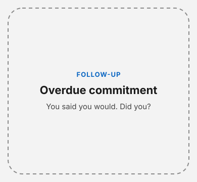
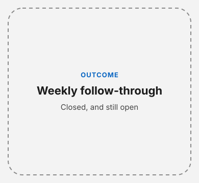
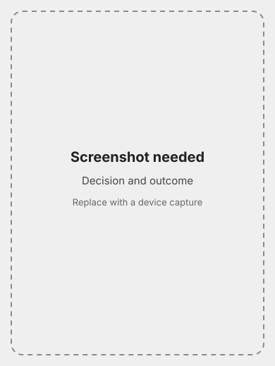
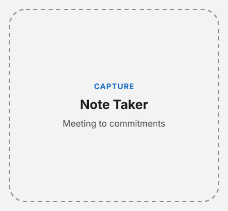

Free
$0
- Action Tracker
- Unlimited decisions
- Unlimited meeting recordings and AI summaries
- Basic voice coach
- Calendar
- Weekly summary
A leadership system that tracks what you actually do
Audio leaves your phone only to transcribe and analyze, and raw audio is not kept after that. Meeting notes stay on the device. We do not train on your content. Privacy details.
Chiefly is a leadership accountability system for military and civilian leaders. It captures what you commit to, asks whether you followed through, and shows the outcome. The voice coach is one input to that loop, not the product.
Said, captured, tracked, followed up, outcome shown.




Free is the full tracking loop, including a 14-day Pro trial. Pro is history, depth, and proof you can take with you. Prices are in US dollars and billed by Apple.
$0
$9.99 / month
$99.99 / year, about two months free
The 14-day Pro trial starts when you subscribe. Cancel anytime in iOS Settings - Apple ID - Subscriptions. Canceling stops the next renewal. Pro access continues through the period Apple has already billed.
Questions, feedback, or bug reports? Email chieflyappsupport@anchorforged.com.